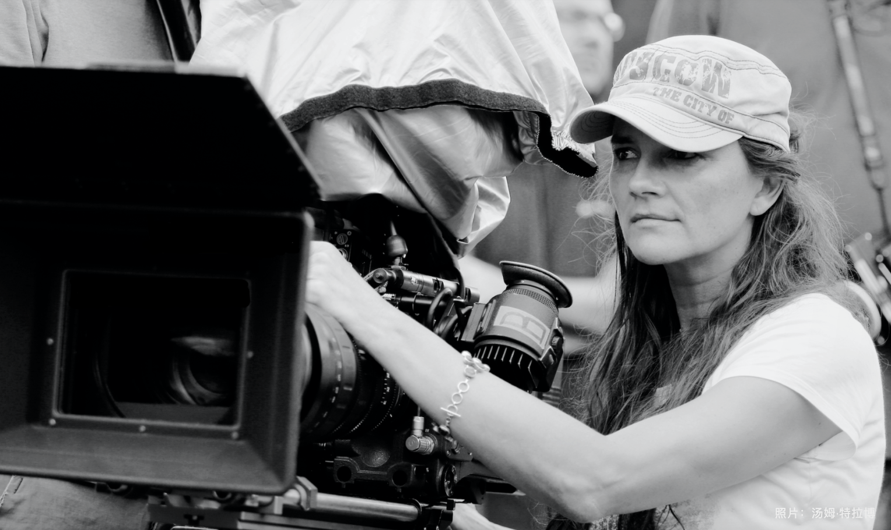

Katja Von Garnier
That Lakota girl with a Chinese last name

"I feel like I'm in the business of recording time, and I'm always curious about how people would like to be remembered."
Here's a time line of Garnier's life:
ENGLISH / CHINESE
- 1966 - Born 15 December in Wiesbaden, Germany, as the daughter of a colour designer.
- 1989 - Started studying directing at the Academy for Television & Film (HFF) in Munich.
- 1990 - Directed short film Lautlos, brought Hollywood scouts to the scene three years later.
- 1993 - Acquired the film rights to Columbia Pictures in the United States, and immediately commissioned to make a documentary for Wolfgang Petersen 's American action blockbuster In the Line of Fire.
- 1994 - Her breakthrough came with the 60-minute student graduation film "Abgeschminkt" ("Making Up!"). The romantic comedy, starring a then widely unknown Katja Riemann, attracted one million viewers. It won the Lubitsch Award, the Federal Film Award for Young Talent and the Student Academy Award in 1994.
- 1997 - Katja von Garnier made a name for herself again in 1997 - first with an episode of the famous film series "Denk ich an Deutschland".
- 1998 - Screenplayed and directed first feature-length film Bandits, told the story of four female prison inmates who form a band. She brought not only Jasmin Tabatabai and Nicolette Krebitz , but also her friend Katja Riemann (1996 Lubitsch Prize winner), who also became her son Merlin's Godmother. Despite conflicting reviews, the road movie turned out to be a respectable hit at the box office.
- 1999 - Moved to Hollywood.
- 2004 - After some rather silent years, the renowned pay TV channel HBO entrusted her with the direction Iron Jawed Angels. Teamed up with Hilary Swank and Anjelica Houston, she made a movie about the women's suffrage movement in the United States, for which Houston won a Golden Globe.
- 2013 - Made the Ostwind 1 with Cornelia Froboess (a 1968 Lubitsch Award winner) , playing a lovable and strict grandmother in a supporting role — — This is an homage to her own youth as a riding girl, and a gift to her daughter Faye, who also loves horses.
- 2015 - Released the second Ostwind film.
- 2017 - Made the third Ostwind film.
If you have time, you should read more about this incredible woman on her Wikipedia entry and Golden Globes interview.